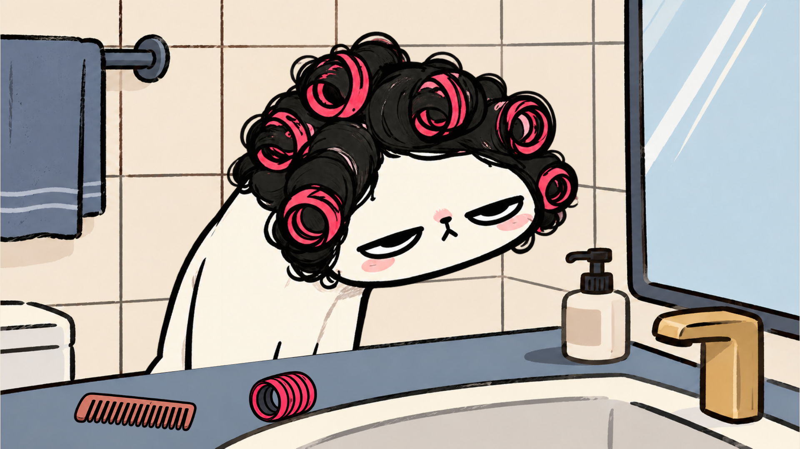
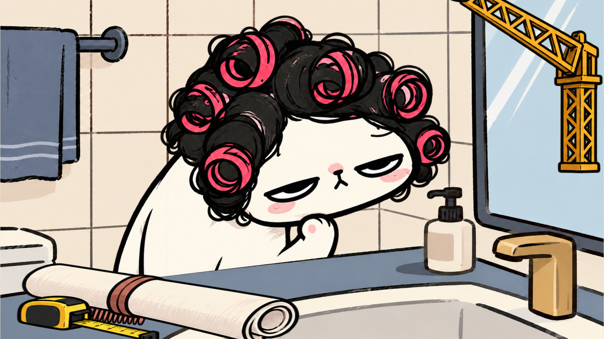
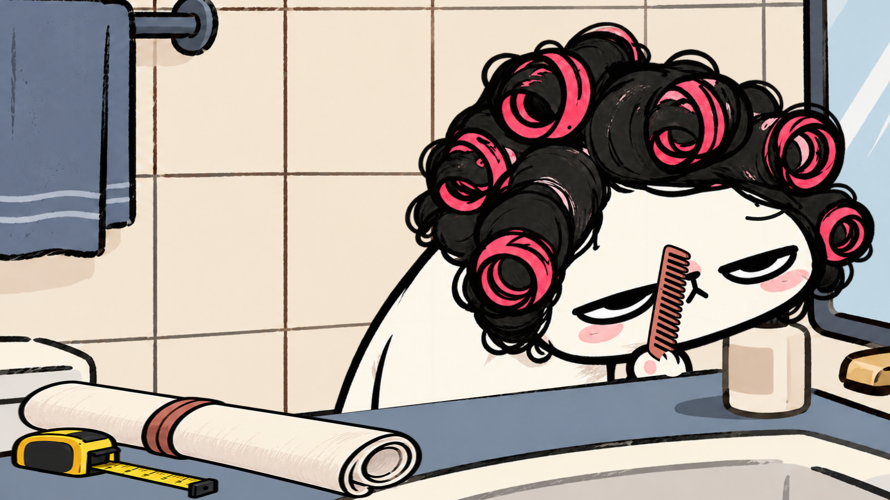

STYLE12 · 1.0 · 预计时间，未录音
用户已确认成人日常漫画画风，并在本轮明确要求制作12秒小样；本例无声，全部时间为预计。口播仅作动作语义与后续录音参考。



| 段落/事件 | 完整口播 | 预计 / 实际时间 | 起始构图 | 画面变化与作用 | 素材与实现 |
|---|---|---|---|---|---|
| N01 / E01、E02、E03 | 我只是想收拾一下。 | 0.00–3.20s / 待录音 | 已审定画风的浴室；同一猫母版在台面后逐步绘出，前景遮挡下半身；梳子和备用卷发器随后加入。 | E01 0.00s：同一猫母版开始逐步绘出；保持已确认IP与出场机制〔direct〕 E02 0.65s：浴室基底显出完整墨线与色面；建立镜柜、猫与台面的空间关系〔direct〕 E03 2.30s：梳子和一个备用卷发器出现；建立简单的实际任务〔direct〕 | room-opening: props/style-v3/bathroom-clean.png，fade cat-opening: 猫/sit，draw counter-opening: props/style-v3/bathroom-clean.png comb-on-counter: props/style-v3/prop-atlas.png，wipe spare-on-counter: props/style-v3/prop-atlas.png，fade |
| N02 / E04、E05、E06、E07、E08、E09、E10、E11、E12 | 脑子里却开始施工了。 | 3.20–8.40s / 待录音 | 保持浴室，猫切抬爪思考姿态；一份过大的计划侵入台面，吊车与带备用卷发器的吊钩逐步介入，猫用克制反应叫停。 | E04 3.20s：切换到抬爪思考的同一猫；把普通梳妆升级为脑内规划〔reaction〕 E05 3.55s：过大的工程蓝图铺到台面上；过度规划开始挤占实际任务〔metaphor〕 E06 4.10s：吊车臂从右上逐步进入；把修饰头发夸张成工程施工〔metaphor〕 E07 4.65s：吊钩和备用卷发器下降；道具对头发产生具体关系〔contrast〕 E08 5.25s：吊钩到达卷发旁，产生一次惯性摆动；给机械运动一个明确结果〔reaction〕 E09 5.80s：摆动减弱，猫仍保持半眯眼；用冷面反应承接荒诞处境〔reaction〕 E10 6.40s：吊钩停稳，挑眉强调质疑；不给过度规划一个热闹赞许〔reaction〕 E11 7.45s：猫叫停，蓝图收起；结束没有必要的工程化〔reaction〕 E12 8.10s：吊钩升回，保留普通梳妆场景；为回到小动作作准备〔callback〕 | room-worksite: props/style-v3/bathroom-clean.png cat-thinking: 猫/groom crane-jib: props/style-v3/prop-atlas.png，wipe counter-worksite: props/style-v3/bathroom-clean.png comb-under-plan: props/style-v3/prop-atlas.png plan-open: props/style-v3/prop-atlas.png，wipe plan-closed-medium: props/style-v3/prop-atlas.png，wipe hanging-roller: props/style-v3/prop-atlas.png skeptical-brow-medium: path，draw |
| N03 / E13、E14、E15、E16、E17 | 算了，先梳头。 | 8.40–12.00s / 待录音 | 切到同一猫的情绪近景，保持六个卷发器；蓝图已卷起，梳子从台面来到抬起的爪子附近，最后用一个小挑眉与停顿收尾。 | E13 8.40s：切近景，保留原抬爪姿态；让角色态度成为焦点〔reaction〕 E14 8.65s：卷起的蓝图落在前景；回扣被收起的过度规划〔callback〕 E15 8.85s：普通小梳子从台面进入动作；回到能完成的具体小事〔direct〕 E16 9.55s：梳子到达猫爪接触位置；不是悬空飘过，落到角色手上〔direct〕 E17 10.30s：挑眉，保留持梳子的近景停顿；让观众读到无语与自嘲〔reaction〕 | room-close: props/style-v3/bathroom-clean.png cat-close: 猫/groom counter-close: props/style-v3/bathroom-clean.png plan-closed-close: props/style-v3/prop-atlas.png，wipe comb-to-paw: props/style-v3/prop-atlas.png paw-over-comb: ip/cat-groom.png skeptical-brow-close: path，draw |
预计稿用于整体审阅；实际稿在录音对齐后复核关键动作和包袱时刻。